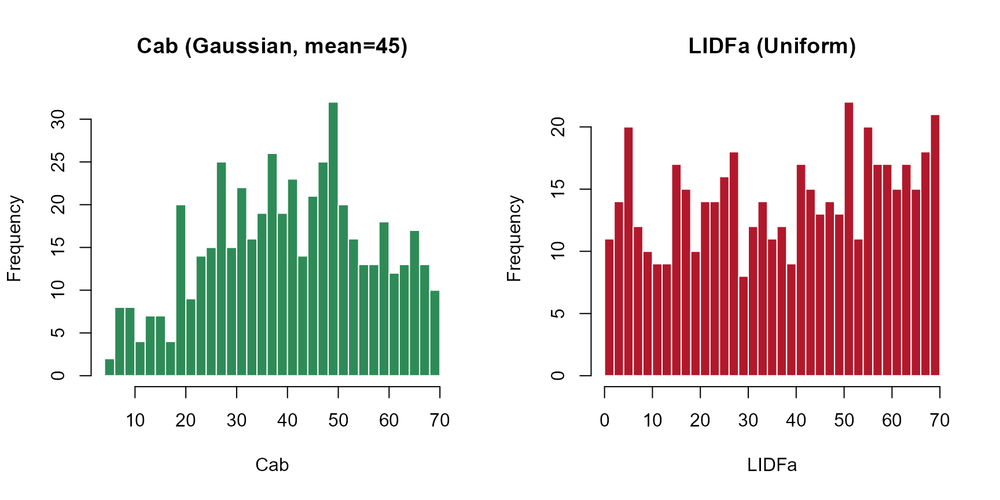
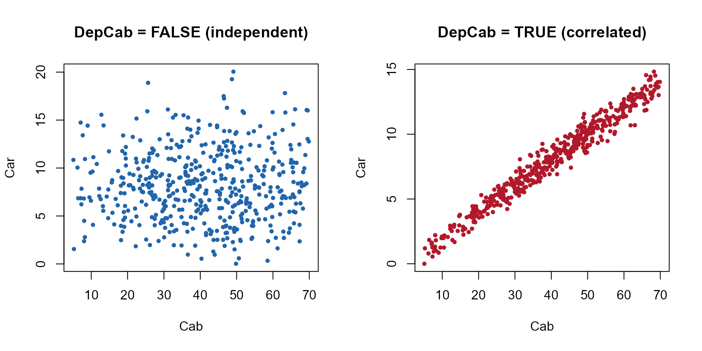
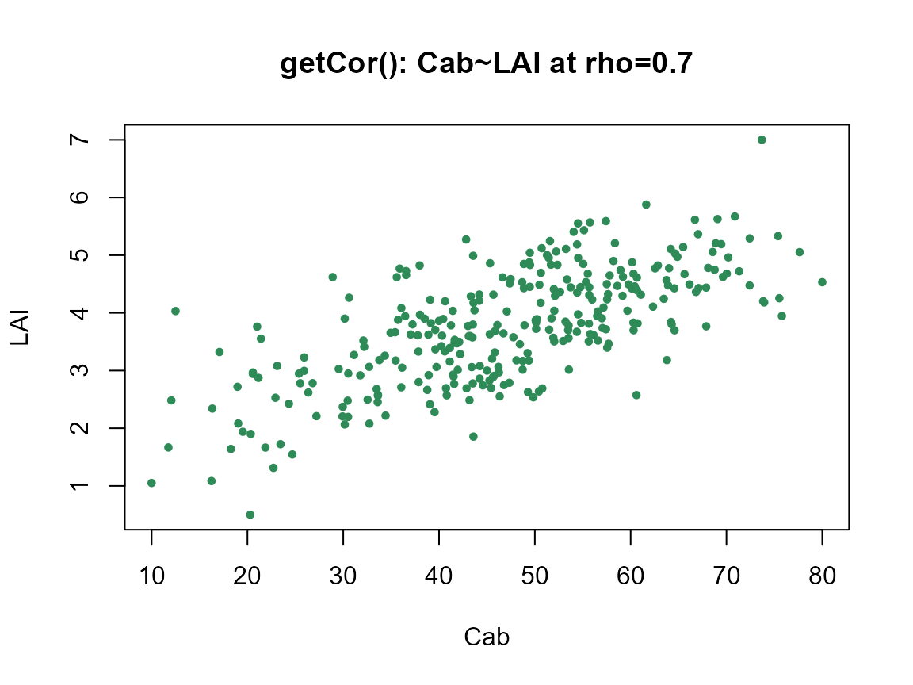

Getting-LUTs
Getting-LUTs.Rmd
library(ToolsRTM)A LUT (Look-Up Table) is one row of trait values per simulated spectrum – the input every canopy model, sensitivity analysis, and inversion workflow in this package starts from. Three functions build one, each trading off control against simplicity differently:
| Function | Distribution per trait | Trait correlation | Typical use |
|---|---|---|---|
getLUT() |
Fixed set (see ?getLUT) |
Independent | Quick default LUT, no customization needed |
get.LUTfromRanges() |
One distribution ("uniform"/"gauss") for
every trait, your own min/max |
Independent | Custom ranges, same distribution shape for all traits |
get_distributionLUT() (this page) |
Per-trait "Uniform"/"Gaussian" choice |
Car~Cab, optional (DepCab) |
Different traits need different distribution shapes in the same LUT |
getCor() |
Normal or Uniform | Any two traits, any target correlation (rho) |
General-purpose correlated sampling beyond Car~Cab |
This page focuses on the last two – per-trait distributions and trait
correlation – since
getLUT()/get.LUTfromRanges() are covered in
the main ToolsRTM vignette.
1. get_distributionLUT(): a different distribution per
trait
Real leaf/canopy traits don’t all follow the same distribution shape.
Chlorophyll content (Cab) tends to cluster around a typical
value (Gaussian-like); the leaf-angle parameter LIDFa has
no such tendency across a mixed canopy (closer to Uniform).
get_distributionLUT() lets each trait pick its own shape
instead of forcing one distribution on all of them.
Define the sampling range (minval/maxval,
one column per trait) and, separately, which distribution each trait
uses:
minval <- data.frame('N' = 1.5, 'Cab' = 5, 'Car' = 0, 'Anth' = 0, 'Cbrown' = 0.0,
'EWT' = 0.001, 'Prot' = 0.00001, 'CBC' = 0.00001,
'LIDFa' = 0, 'LAI' = 0.5,
### input for INFORM
LAIu = 0, sd = 200, cd = 0.2, h = 5,
### input for fourSAIL-2
fraction_brown = 0, diss = 0.1, Cv = 0.3, Zeta = 0)
maxval <- data.frame('N' = 3, 'Cab' = 70, 'Car' = 25, 'Anth' = 7, 'Cbrown' = 0.2,
'EWT' = 0.035, 'Prot' = 0.03, 'CBC' = 0.03,
'LIDFa' = 70, 'LAI' = 7,
### input for INFORM
LAIu = 0.8, sd = 1000, cd = 7, h = 20,
### input for fourSAIL-2
fraction_brown = 1, diss = 1, Cv = 1, Zeta = 0.2)
TypeDistrib <- data.frame('N' = 'Gaussian', 'Cab' = 'Gaussian', 'Car' = 'Gaussian',
'Anth' = 'Uniform', 'Cbrown' = 'Uniform',
'EWT' = 'Uniform', 'Prot' = 'Uniform', 'CBC' = 'Uniform',
'LIDFa' = 'Uniform', 'LAI' = 'Gaussian',
### input for INFORM
LAIu = 'Uniform', sd = 'Uniform', cd = 'Uniform', h = 'Uniform',
### input for fourSAIL-2
fraction_brown = 'Uniform', diss = 'Uniform', Cv = 'Uniform', Zeta = 'Uniform')Traits marked "Gaussian" need a mean and standard
deviation too (traits left out of
Mean_gauss/Std_gauss – everything
"Uniform" – are simply ignored for this part):
Mean_gauss <- data.frame('N' = 2.2, 'Cab' = 45, 'Car' = 8, 'LAI' = 2.25)
std_gauss <- Mean_gauss / 2.0
nSamples <- 500
data.LUT <- get_distributionLUT(minval = minval, maxval = maxval,
nSamples = nSamples, TypeDistrib = TypeDistrib,
Mean_gauss = Mean_gauss, Std_gauss = std_gauss,
DepCab = FALSE, setseed = 246)Seeing the difference: Gaussian vs. Uniform
Cab (Gaussian, mean 45) and LIDFa (Uniform,
0-70) came from the exact same get_distributionLUT() call
above – the histograms show why picking the right distribution per trait
matters:
op <- par(mfrow = c(1, 2))
hist(data.LUT$Cab, breaks = 30, col = "#2E8B57", border = "white",
main = "Cab (Gaussian, mean=45)", xlab = "Cab")
hist(data.LUT$LIDFa, breaks = 30, col = "#B2182B", border = "white",
main = "LIDFa (Uniform)", xlab = "LIDFa")
par(op)2. Trait correlation
Independently-sampled traits are the default – but real traits
co-vary (e.g. carotenoid content Car tracks chlorophyll
Cab; plants with more of one pigment tend to have more of
the other). Two ways to get correlated traits into a LUT:
DepCab: the built-in Car~Cab correlation
Setting DepCab = TRUE (instead of FALSE
above) stops sampling Car independently – it’s redrawn as a
function of Cab (correlated at r = 0.8, the empirical
co-variation reported in leaf pigment data):
data.LUT.dep <- get_distributionLUT(minval = minval, maxval = maxval,
nSamples = nSamples, TypeDistrib = TypeDistrib,
Mean_gauss = Mean_gauss, Std_gauss = std_gauss,
DepCab = TRUE, setseed = 246)
cat("Car~Cab correlation, DepCab=FALSE:", round(cor(data.LUT$Cab, data.LUT$Car), 2), "\n")
#> Car~Cab correlation, DepCab=FALSE: 0.03
cat("Car~Cab correlation, DepCab=TRUE: ", round(cor(data.LUT.dep$Cab, data.LUT.dep$Car), 2), "\n")
#> Car~Cab correlation, DepCab=TRUE: 0.98
op <- par(mfrow = c(1, 2))
plot(data.LUT$Cab, data.LUT$Car, pch = 19, col = "#2166AC", cex = 0.6,
xlab = "Cab", ylab = "Car", main = "DepCab = FALSE (independent)")
plot(data.LUT.dep$Cab, data.LUT.dep$Car, pch = 19, col = "#B2182B", cex = 0.6,
xlab = "Cab", ylab = "Car", main = "DepCab = TRUE (correlated)")
par(op)
getCor(): correlate any two traits, any target
strength
DepCab only covers Car~Cab. For any other trait pair (or
a different target correlation), getCor() is the
general-purpose tool – it samples two traits jointly at a chosen
correlation coefficient (rho) instead of independently:
cor_lut <- getCor(n_inputs = 2, nLUT = 300, distribution = "Normal", setseed = 1,
rho = 0.7, Varnames = c("Cab", "LAI"),
MinRange = c(10, 0.5), MaxRange = c(80, 7))
cat("Target rho: 0.7. Achieved correlation:",
round(cor(cor_lut$LUT$Cab, cor_lut$LUT$LAI), 2), "\n")
#> Target rho: 0.7. Achieved correlation: 0.69
plot(cor_lut$LUT$Cab, cor_lut$LUT$LAI, pch = 19, col = "#2E8B57", cex = 0.6,
xlab = "Cab", ylab = "LAI", main = "getCor(): Cab~LAI at rho=0.7")
getCor() returns a list: $LUT (the
correlated trait table to actually use) and $Covarianza
(the covariance matrix behind it, for reference).
distribution accepts "Normal" or
"Uniform" here – note this is capitalized differently from
get.LUTfromRanges()’s own "uniform"/
"gauss", a real inconsistency in the package worth knowing
about rather than guessing past.
Summary
- Need one quick default LUT?
getLUT(). - Need your own ranges, one distribution shape for everything?
get.LUTfromRanges(). - Need different traits to have different distribution shapes in the
same LUT (and optionally the built-in Car~Cab correlation)?
get_distributionLUT(). - Need two specific traits correlated at a chosen strength, beyond
Car~Cab?
getCor(), then splice its columns into whichever LUT you built above.